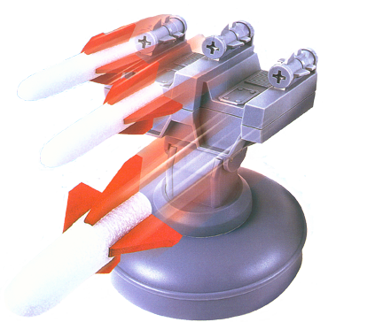

|  |
USB Missile Launcher NZ HelpUSB Missile Launcher NZ can be used to control a USB Missile Launcher. As shipped the included software is only for Windows, now Mac users can control the Launcher. Controlling the Launcher softwareClick here for instructions on how to use the USB Missile Launcher NZ software.TroubleshootingClick here for help if you find that the Launcher software does not work properly. |
Myself and Glenn Anderson purchased a USB Rocket Launcher each. We already knew that it did not come with Mac OS drivers or software and took the opportunity to fill the gap. Glenn wrote the Mac OS X driver after getting things to work under OS 9. He also wrote a keyboard based program to move the turret and fire.
I've taken Glenn's code and built and Cocoa / Objective-C program with Graphical User Interface. Ideas for look and feel have come from around the globe, see references below. The source code has been included with this distribution.
USB Missile Launcher NZ is only known to work on Mac OS 10.4 and above. A 700+MHz Macintosh may also be required.
Version 1.3.2 of the Missile launcher software works with Mac OS 10.3.9 (and possibly 10.2.8) and supports the DreamCheeky Rocket Launcher. This software release is available in the downloads area of
http://dgwilson.wordpress.com (BLOG)
http://homepages.paradise.net.nz/dgwilson/ (homepage)
Glenn Anderson
glenn@eudora.co.nz
Mac OS X Driver code
Colin Bridgewater
colin.bridgewater@btinternet.com
Colin has also written a Mac software to control the USB Rocket
Launcher as well, you will need to send Colin an e-mail for a copy of
the application.
Stephen Marshall
stephen.marshall@vuw.ac.nz
Coding assistance, interface suggestions - getting the "draw to work", and Preferences
Matt Gemmell
For the preferences subsystem. See Matt's web site for more details and lots of OS X source code.
http://mattgemmell.com/source
http://mattgemmell.com
Simon Shead
Contributed some great ideas for application enhancements including the inspiration for controlling multiple launchers
Your own Improvements
If you decide to make some improvements, I'd really appreciate getting
a copy of the updates. It's like watching the wheel evolve... see
what's happened to the Typewriter over the last 50 years!
Distributed under GPL (USB Missile Launcher NZ)